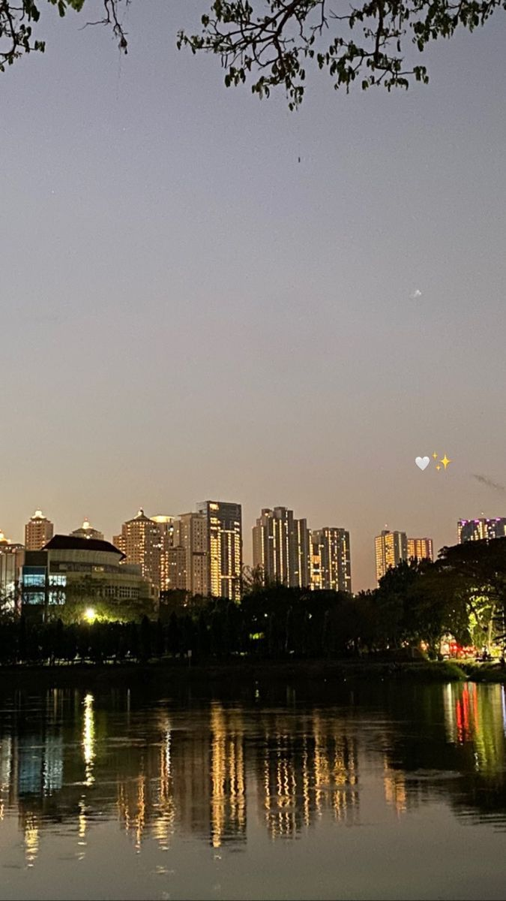
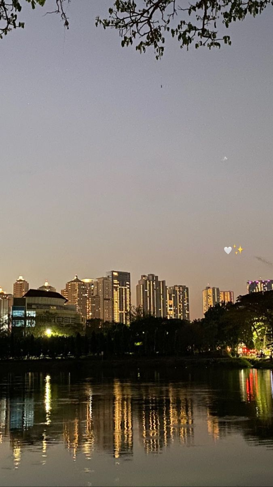

History
My Hometown, Surabaya.
The city where I was born in July 2003, is the second-largest city in Indonesia after Jakarta.
It is the capital of East Java province and is located on the north coast of Java Island.
Surabaya has a long history and is one of the most important cities in Indonesia.
Surabaya is known as the City of Heroes for its role in the Indonesian independence struggle.
On November 10, 1945, a battle took place between Indonesian forces and Dutch colonial troops in Surabaya.
The battle lasted for three weeks and claimed a heavy toll of life. This event was later commemorated as Heroes' Day.
In addition to its long history, Surabaya is also known as a modern and dynamic metropolitan city.
It is a center for trade, industry, and services in Indonesia.
Surabaya is also a popular tourist destination because it has a variety of attractions, from historical, cultural, natural, to culinary tourism.
I am proud to be a native of Surabaya. It is a city with a rich history, vibrant culture, and delicious food.
I am grateful for the opportunities that Surabaya has given me, and I am excited to see what the future holds for this great city.
Tradition
Gulat Okol
The tradition of performing a wrestling game between two people on a haystack. However, the Okol Wrestling tradition is performed on a stage with a burlap sack. Usually this tradition is carried out during the dry season as a ritual to call for rain.
Sedekah Bumi
a form of community gratitude in the Sambikerep area. Where after receiving a bountiful harvest. Usually people who carry out this tradition will make tumpeng filled with abundant crops.
Larung Ari-ari
This tradition is carried out by throwing the baby's placenta. Where, the placenta comes from a newborn baby to the sea. During the procession, the baby's placenta will be released along with white cloth, jugs, needles and seven kinds of flowers.
Tamu Manten Pegon
The meeting between the bride and the groom. The rituals and clothing used are so thick with elements of Surabaya, Arabic, and Chinese culture and continued with the parade.
Gallery
 
